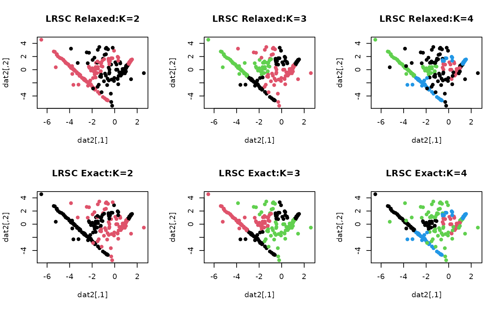

Low-Rank Subspace Clustering (LRSC) constructs the connectivity of the data by solving $$\textrm{min}_C \|C\|_*\quad\textrm{such that}\quad A=AC,~C=C^\top$$ for the uncorrupted data scenario where \(A\) is a column-stacked data matrix. In the current implementation, the first equality constraint for reconstructiveness of the data can be relaxed by solving $$\textrm{min}_C \|C\|_* + \frac{\tau}{2} \|A-AC\|_F^2 \quad\textrm{such that}\quad C=C^\top$$ controlled by the regularization parameter \(\tau\). If you are interested in enabling a more general class of the problem suggested by authors, please contact maintainer of the package.
LRSC(data, k = 2, type = c("relaxed", "exact"), tau = 1)| data | an \((n\times p)\) matrix of row-stacked observations. |
|---|---|
| k | the number of clusters (default: 2). |
| type | type of the problem to be solved. |
| tau | regularization parameter for relaxed-constraint problem. |
a named list of S3 class T4cluster containing
a length-\(n\) vector of class labels (from \(1:k\)).
name of the algorithm.
$$\textrm{min}_C \|C\|_*\quad\textrm{such that}\quad D=DC$$ for column-stacked data matrix \(D\) and \(\|\cdot \|_*\) is the nuclear norm which is relaxation of the rank condition. If you are interested in full implementation of the algorithm with sparse outliers and noise, please contact the maintainer.
Vidal R, Favaro P (2014). “Low Rank Subspace Clustering (LRSC).” Pattern Recognition Letters, 43, 47--61. ISSN 01678655, doi: 10.1016/j.patrec.2013.08.006 .
# \donttest{
## generate a toy example
set.seed(10)
tester = genLP(n=100, nl=2, np=1, iso.var=0.1)
data = tester$data
label = tester$class
## do PCA for data reduction
proj = base::eigen(stats::cov(data))$vectors[,1:2]
dat2 = data%*%proj
## run LRSC algorithm with k=2,3,4 with relaxed/exact solvers
out2rel = LRSC(data, k=2, type="relaxed")
out3rel = LRSC(data, k=3, type="relaxed")
out4rel = LRSC(data, k=4, type="relaxed")
out2exc = LRSC(data, k=2, type="exact")
out3exc = LRSC(data, k=3, type="exact")
out4exc = LRSC(data, k=4, type="exact")
## extract label information
lab2rel = out2rel$cluster
lab3rel = out3rel$cluster
lab4rel = out4rel$cluster
lab2exc = out2exc$cluster
lab3exc = out3exc$cluster
lab4exc = out4exc$cluster
## visualize
opar <- par(no.readonly=TRUE)
par(mfrow=c(2,3))
plot(dat2, pch=19, cex=0.9, col=lab2rel, main="LRSC Relaxed:K=2")
plot(dat2, pch=19, cex=0.9, col=lab3rel, main="LRSC Relaxed:K=3")
plot(dat2, pch=19, cex=0.9, col=lab4rel, main="LRSC Relaxed:K=4")
plot(dat2, pch=19, cex=0.9, col=lab2exc, main="LRSC Exact:K=2")
plot(dat2, pch=19, cex=0.9, col=lab3exc, main="LRSC Exact:K=3")
plot(dat2, pch=19, cex=0.9, col=lab4exc, main="LRSC Exact:K=4")

par(opar)
# }